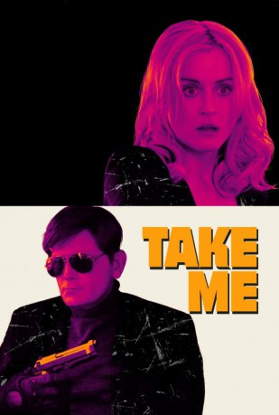

#6561 Take Me
 
 IMDB-Wertung: 6.1 / 10
IMDB-Wertung: 6.1 / 10  Tomatometer: 67
Tomatometer: 67  Metascore: 56
Metascore: 56 
Ray is a fledgling entrepreneur who specializes in high-end simulated abductions. He jumps at the chance when a mysterious client contracts him for a weekend kidnapping with a handsome payday at the end. But the job isn't all that it seems.
WEBHDRIP DUBBED
Jahr: 2017
Dauer: 83 Minuten
FSK:
Land: USA Studio: Orchard, TheTonspuren: DD2.0 - ,
Untertitel: Englisch,
Auflösung: 1080p (1920x816) Größe: 3082 MB
Genre: Komödie, Krimi
Regisseur: Pat Healy
Drehbuch: Mike Makowsky
Soundtrack:
Darsteller:
 Taylor Schilling als Anna St. Blair
Taylor Schilling als Anna St. Blair Pat Healy als Ray Moody
Pat Healy als Ray Moody- Alycia Delmore als Natalie
 Jim O'Heir als Stuart
Jim O'Heir als Stuart- Brooke Dillman als Cathy
- Mark Kelly als Tom
 Toby Huss als Officer Judkins
Toby Huss als Officer Judkins Alejandro Patiño als Officer Ramirez
Alejandro Patiño als Officer Ramirez- Andrew Staton als Radio Announcer
- Shantell Yasmine Abeydeera als Background
- Lila Claghorn als Background
- Korama Danquah als Background
- Sevak Hakoyan als Background
- Madeleine Heil als Background
- Valentina Matosian als Background
- Mabel Maultsby als Background
- Yassir Nadifi als Background
- Marty Penate als Background
- Sierra Renfro als Background
- Thia Schuessler als Background
- Alex Sink als Background
- Michelle Siouty als Background
- Anthony Stabley als Background
- DeForrest Taylor als Background
- Marijean Vardanian als Background
- Miles Healy als Natalie's Son
- Willow Healy als Natalie's Daughter
- Kati Zachary als Kendra
- Vana Akhverdyan als Background
- Jose Alarcon als Background
- Nick Antonyan als Background
- Josh Avlakeotes als Background
- Max Bergmanis als Background
- Lundon Boyd als Background
- DeMorge Brown als Background
- Robert Carpenter als Background
- Michael Chiboucas als Background
- David Chick als Background
- Jerome Chong als Background
- Jerilyn Clayton als Background
- Taylor Clemenza als Background
- Tawny Clemons als Background
- Richard Covarrubias als Background
- Blake Crowson als Background
- Phong Dang als Background
- Giabriela Ensil als Background
- Lisa Ensminger als Background
- Joshua Fu als Background
- Matthew Keibler als Background
- Kevin Kerr als Background
Datei: X:\2017(N-Z)\Take Me (2017, FSK, 1920x816).mkv seit 11.07.2017
Festplatte: HD 2017(A-Z)-2018(A-F)
 Es gibt insgesamt 170 Filme in der Gruppe '2017(N-Z)'
Es gibt insgesamt 170 Filme in der Gruppe '2017(N-Z)'